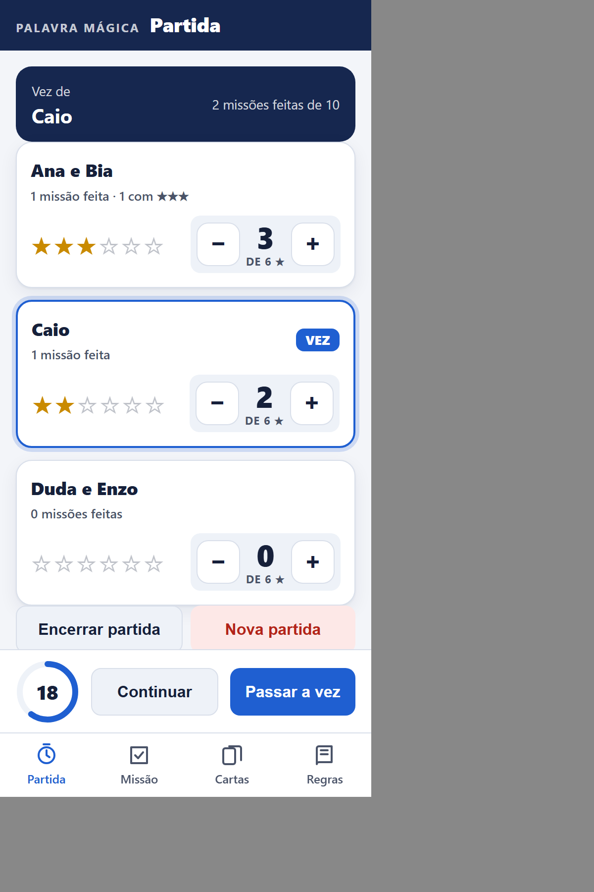
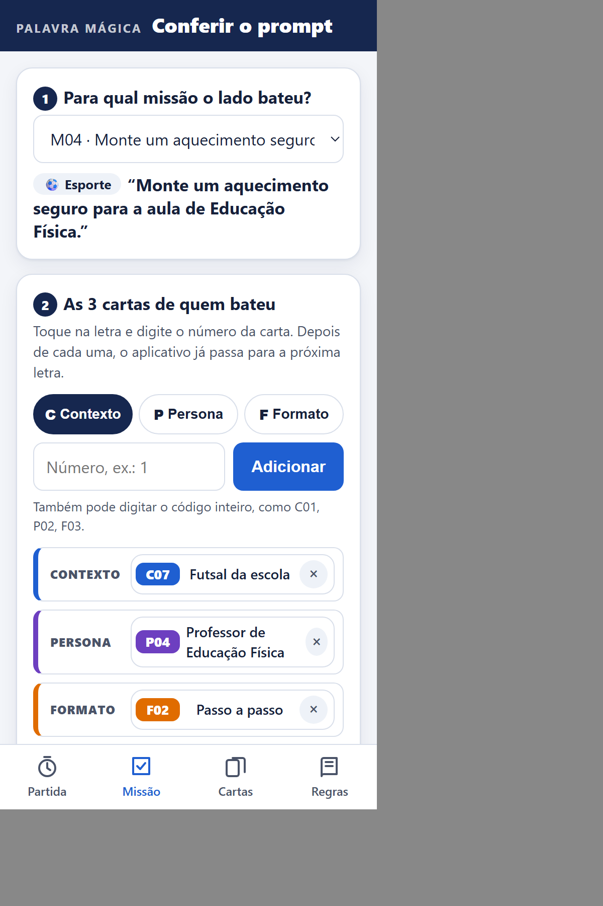
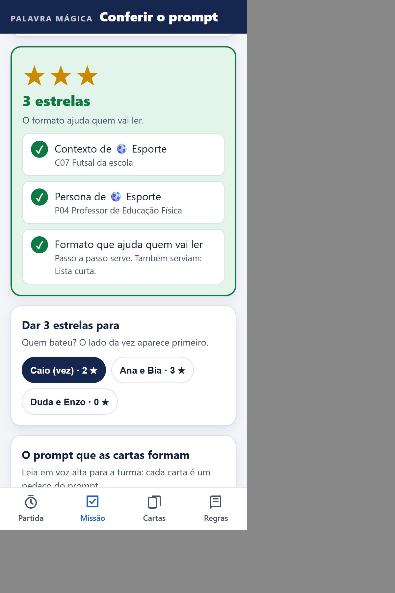

Manual do Professor
Um jogo de cartas para aprender a escrever bons prompts, sem internet na sala de aula.
“Monte um aquecimento seguro para a aula de Educação Física.”
Pense: quem vai ler? Que formato ajuda essa pessoa?
Futsal da escola
“Treino o time de futsal da escola, com meninos e meninas.”
Professor de Educação Física
No prompt:
“Você é professor de Educação Física.”
Passo a passo
Etapas numeradas, na ordem de fazer.
Para quem é: alunos do 6º ano do Ensino Fundamental até o Ensino Médio. Foi pensado para escolas sem internet ou com internet ruim: na mesa, os alunos só usam cartas de papel, e o aplicativo do professor funciona sem internet.
Um prompt é o pedido que a gente escreve para uma inteligência artificial (IA) responder. Quanto mais claro o pedido, melhor a resposta. No jogo, um prompt tem 4 partes, e cada parte é uma carta. Quando um lado junta as 4, o prompt fica pronto:
Professor de Educação Física
No prompt:
“Você é professor de Educação Física.”
Futsal da escola
“Treino o time de futsal da escola, com meninos e meninas.”
“Monte um aquecimento seguro para a aula de Educação Física.”
Pense: quem vai ler? Que formato ajuda essa pessoa?
Passo a passo
Etapas numeradas, na ordem de fazer.
PersonaVocê é professor de Educação Física.
ContextoTreino o time de futsal da escola, com meninos e meninas.
MissãoTarefa: monte um aquecimento seguro para a aula de Educação Física.
FormatoResponda em formato de passo a passo.
O aplicativo mostra uma resposta de exemplo da IA:
1. Caminhe por 2 minutos.
2. Gire os braços e os tornozelos devagar.
3. Faça 10 polichinelos.
4. Corra leve por 2 minutos.
Sentiu dor? Pare e avise o professor.
| Carta | A pergunta que o aluno aprende a fazer | Por que a resposta melhora |
|---|---|---|
| Missão | O que eu quero? | Um pedido claro diz para a IA o que fazer. As missões são tarefas de escola, como explicar a dengue para uma criança. |
| Contexto | Onde estou e o que está acontecendo? | A IA não sabe onde você mora nem o que está acontecendo. Contar a situação deixa a resposta certa para aquele lugar. |
| Persona | Quem a IA vai ser? | Pedir que a IA responda como alguém da área (uma médica, um técnico de futebol) muda as palavras e o cuidado da resposta. |
| Formato | Como a resposta deve chegar para quem vai ler? | O mesmo conteúdo ajuda mais ou menos conforme a forma: passo a passo para quem vai fazer, cartaz para quem passa no corredor. |
Por que as estrelas. O contexto e a persona precisam ter o ícone do assunto da missão: as partes do prompt precisam combinar. O formato é a escolha que mais faz pensar: vale ★★★ quando ajuda quem vai ler e ★★ quando não ajuda tanto. Assim, a cada jogada o aluno pergunta: quem vai ler essa resposta?
São 72 cartas, impressas só de um lado. O código no canto de cima (como M04 ou C07) é o que você digita no aplicativo. O ícone mostra o assunto: ✚ Saúde · ⚽ Esporte · 💻 Tecnologia · 🌳 Meio ambiente.
“Monte um aquecimento seguro para a aula de Educação Física.”
Pense: quem vai ler? Que formato ajuda essa pessoa?
Missão
10 cartas
O pedido, com o ícone do assunto. Fica aberta no meio da mesa: qualquer lado pode fazer.
Dá as estrelas para quem bater nela.
Futsal da escola
“Treino o time de futsal da escola, com meninos e meninas.”
Contexto
20 cartas
A situação, contada por quem pede: de onde fala e o que está acontecendo.
Precisa ter o mesmo ícone da missão.
Professor de Educação Física
No prompt:
“Você é professor de Educação Física.”
Persona
16 cartas
Quem a IA vai ser ao responder. A frase de baixo é como ela entra no prompt.
Precisa ter o mesmo ícone da missão.
Passo a passo
Etapas numeradas, na ordem de fazer.
Formato
18 cartas (9 tipos, 2 de cada)
Como a resposta chega para quem vai ler. O desenho mostra a forma.
Serve em qualquer missão: ★★★ ou ★★.
1Compre 1do monte ou a de cima do lixo.
2Fechou um prompt? Bata!Contexto e persona com o ícone de uma missão da mesa + 1 formato.
3Descarte 1Fique sempre com 5 cartas.
★★★ formato que ajuda quem vai ler
★★ outro formato
Bateu? Fique com a missão, ponha as 3 cartas embaixo do monte, compre 3 e vire outra missão.
Resumo da vez
8 cartas, 1 por lado
Os 3 passos da vez e as estrelas. Não entra no monte.
Fica na frente de cada lado, para consultar.
Quantas de cada assunto
| Missões | Contextos | Personas | |
|---|---|---|---|
| ✚ Saúde | 3 | 5 | 4 |
| ⚽ Esporte | 2 | 5 | 4 |
| 💻 Tecnologia | 3 | 5 | 4 |
| 🌳 Meio ambiente | 2 | 5 | 4 |
Os formatos não têm assunto. A lista de todas as cartas está no gabarito.
Como imprimir: imprima as 8 folhas de cartas em A4, coloridas, de preferência em papel mais grosso (cartolina ou papel de 180 g). Corte nas linhas tracejadas: cada folha tem 9 cartas do tamanho de uma carta de baralho. A folha de regras e o gabarito podem ser em papel comum. Guarde cada jogo num envelope.
“Monte um aquecimento seguro para a aula de Educação Física.”
Pense: quem vai ler? Que formato ajuda essa pessoa?
“Crie um cardápio de lanche saudável para a semana.”
Pense: quem vai ler? Que formato ajuda essa pessoa?
“Explique para a turma como evitar golpes na internet.”
Pense: quem vai ler? Que formato ajuda essa pessoa?
Tabela
Linhas e colunas para comparar ou organizar.
| Modo | Quantos alunos | Como fica |
|---|---|---|
| Duelo | 2 a 4 | 1 contra 1, ou dupla contra dupla (cada dupla é um lado). |
| Mesa | 3 a 10 | 3 a 5 lados, todos contra todos. Cada lado é 1 aluno ou 1 dupla. |
| Turma | até 40 | Até 5 grupos, numa mesa grande ou no chão. Cada grupo decide junto, e quem segura as cartas troca a cada vez. Com uma turma grande, imprima mais de um jogo e faça várias mesas. |
Dica: no modo Turma, escreva no quadro a ordem dos grupos. Os grupos que esperam a vez podem ir pensando em qual formato ajuda cada missão da mesa.
aNa mesa estão estas 3 missões.
“Monte um aquecimento seguro para a aula de Educação Física.”
Pense: quem vai ler? Que formato ajuda essa pessoa?
“Crie um cardápio de lanche saudável para a semana.”
Pense: quem vai ler? Que formato ajuda essa pessoa?
“Explique para a turma como evitar golpes na internet.”
Pense: quem vai ler? Que formato ajuda essa pessoa?
bO Lado 1 tem estas 5 cartas e compra P04 Professor de Educação Física do monte.
Futsal da escola
“Treino o time de futsal da escola, com meninos e meninas.”
Passo a passo
Etapas numeradas, na ordem de fazer.
Pagamento em Hangzhou
“Em Hangzhou, quase todo mundo paga as compras com o celular.”
Bióloga
No prompt:
“Você é bióloga.”
Tabela
Linhas e colunas para comparar ou organizar.
Professor de Educação Física
No prompt:
“Você é professor de Educação Física.”
cFechou a M04 ⚽: contexto ⚽ + persona ⚽ + formato. O Lado 1 bate e mostra as 4 cartas.
“Monte um aquecimento seguro para a aula de Educação Física.”
Pense: quem vai ler? Que formato ajuda essa pessoa?
Futsal da escola
“Treino o time de futsal da escola, com meninos e meninas.”
Professor de Educação Física
No prompt:
“Você é professor de Educação Física.”
Passo a passo
Etapas numeradas, na ordem de fazer.
dO professor digita M04, C07, P04 e F02 no aplicativo: ★★★, porque um passo a passo ajuda quem vai fazer o aquecimento. Com F05 Tabela, seriam ★★.
eO Lado 1 fica com a M04, põe as 3 cartas embaixo do monte, compra 3, vira uma missão nova no lugar e descarta 1. Agora é a vez do próximo lado.
O aplicativo do professor marca as estrelas, o tempo da vez e confere cada prompt. Ele abre no navegador do celular, neste endereço:
lucas-ibmec.github.io/ibmec-metodosageis-nexus-jogo/app



As páginas Cartas (procurar uma carta pelo código ou pelo nome) e Regras (o resumo das regras) também funcionam sem internet. Sem celular, use o gabarito impresso: ele tem as mesmas respostas.
Ganha quem chegar a 6 estrelas primeiro (2 ou 3 missões). O aplicativo avisa.
| Se acontecer | Faça assim |
|---|---|
| Bateu sem o ícone certo | Não vale. As cartas voltam para a mão, o lado descarta 1 e passa a vez. Não diga se o formato servia: a missão continua na mesa. |
| Duas missões com o mesmo ícone | O lado escolhe para qual vai bater. |
| Acabou o tempo da vez | O lado descarta 1 carta e passa a vez. |
| O monte acabou | Embaralhe o lixo, menos a carta de cima, e faça um monte novo. |
| As missões acabaram (só com 5 lados) | Ganha quem tiver mais estrelas. Empate: quem fez mais missões com ★★★. |
Antes · 2 minutos
Mostre o resumo da vez e leia os 3 passos. Depois, faça uma vez de exemplo em voz alta, com as cartas na mão.
Durante
Quando alguém bater, leia em voz alta o prompt que o aplicativo monta e pergunte: para quem é essa resposta? Esse formato ajuda essa pessoa?
A palavra final é sua. Se um lado defender bem outro formato, você pode mudar as estrelas com os botões + e − do placar.
Depois · 5 minutos
Cada lado mostra uma missão que fez e diz por que escolheu aquele formato. Para fechar, cada aluno escreve no caderno um prompt com as 4 partes para um problema da escola.
Para conversar com a turma: usar a IA com cuidado
O professor pediu que o jogo e a documentação fossem em português (Revisão da Sprint 4, em 04/11/2026). A regra que seguimos: se existe palavra em português que diz o mesmo, usamos a palavra em português. Por isso, o material diz aplicativo e não app, partida de teste e não playtest, e o nome do jogo é Palavra Mágica. Ficam em outra língua só os nomes próprios e as palavras que os alunos e o professor vão encontrar com esse nome fora da sala.
| Palavra | Língua | O que quer dizer | Por que fica assim |
|---|---|---|---|
| prompt | inglês | O pedido (o texto) que a gente escreve para uma IA responder. | É o nome usado nos aplicativos de IA, nas notícias e no trabalho. Aprender o nome certo faz parte do que o jogo ensina. Em português, seria “comando” ou “pedido”. |
| persona | latim | O papel que alguém assume. No jogo, quem a IA vai ser ao responder. | É o nome usado nos guias de como escrever prompts. A palavra vem da máscara que os atores usavam no teatro romano. |
| internet | inglês | A rede que liga computadores e celulares do mundo todo. | Todo mundo no Brasil usa essa palavra, e não há outra em português de uso comum. |
| nomes de lugares | várias | As cidades dos contextos, como Boston, Chicago, Miami, Bangalore e Hangzhou. | São nomes próprios. Usamos a forma em português quando ela existe (Nova York, Xangai, Cantão, Copenhague, Vale do Silício). |
| nomes de pessoas | inglês | James Naismith, que inventou o basquete, numa das respostas de exemplo. | É nome próprio, não se traduz. |
| Antes | Agora | Onde |
|---|---|---|
| Magic Prompt | Palavra Mágica | nome do jogo, nas cartas, no manual e no aplicativo |
| app, companion app | aplicativo, aplicativo do professor | regras, gabarito, manual e telas do aplicativo |
| playtest | partida de teste | folha de regras e aplicativo |
| fast-food | hambúrguer e batata frita | carta C03 Lanche em Miami |
| tai chi | ginástica | carta C08 Ginástica em Xangai |
| engenheiro de software | engenheiro de computação | carta P05 |
| Aedes aegypti, site, link | mosquito da dengue, página, endereço | respostas de exemplo do aplicativo |
| Palavra | Língua | O que quer dizer | Por que fica assim |
|---|---|---|---|
| Scrum, Kanban e ScrumBan | inglês e japonês | Nomes de métodos ágeis. Kanban quer dizer “placa” ou “cartão de sinalização” em japonês; ScrumBan junta os dois. | São nomes próprios dos métodos estudados na disciplina. |
| Sprint | inglês | Corrida curta: cada ciclo de trabalho de 1 ou 2 semanas. | O Guia do Scrum em português mantém o nome em inglês. |
| Backlog | inglês | A lista de tudo o que falta fazer no produto (ou na sprint). | Idem: nome do Guia do Scrum. |
| Product Owner (PO), Scrum Master (SM) e Devs | inglês | Os papéis do time: quem decide o produto, quem cuida do método e quem desenvolve. | Idem: nomes dos papéis no Guia do Scrum. |
| To do, Doing, Sprint Done, Feedback, Postponed/Fixed e Due Date | inglês | A fazer, fazendo, pronto na sprint, esperando opinião, adiado ou fixo, e prazo. | São as colunas e os campos do quadro modelo que o professor da disciplina deu. Mantivemos para ele reconhecer o quadro. |
| WIP | inglês | “Trabalho em andamento”: o limite de tarefas na coluna Fazendo. | Termo do Kanban, usado com esse nome na aula. |
| Weekly, Keep / Stop / Start e Planning Poker | inglês | Reunião semanal; o que manter, parar e começar (na retrospectiva); estimar o tamanho das tarefas com cartas. | Nomes usados nas aulas da disciplina. |
| companion app | inglês | O aplicativo do professor que acompanha o jogo. | Foi o nome usado pelo cliente na Revisão da Sprint 1 e ficou no tema 2 do quadro. No material do jogo, dizemos “aplicativo do professor”. |
| playtest | inglês | Partida de teste do jogo com jogadores de verdade. | Aparece no nome de algumas tarefas do quadro. No material do jogo, dizemos “partida de teste”. |
| MVP | inglês | Produto mínimo viável: a menor versão do produto que já dá para testar. | Aparece no nome de uma tarefa do quadro; é a sigla usada em projetos ágeis. |
| Roadmap e pitch | inglês | O mapa das entregas ao longo das sprints; a apresentação curta do produto. | O roadmap é um cartão do quadro; pitch é como a disciplina chama a apresentação final (18/11). |
| NEXUS | latim | Ligação, conexão (em português, “nexo”). | É o nome do nosso grupo. |
| Notion, Miro, Figma, GitHub, HTML, CSS e JavaScript | inglês | Os programas e as linguagens que usamos para organizar e fazer o projeto. | São nomes próprios, sem tradução. |